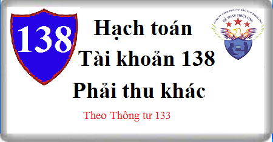

Cách hạch toán Tài khoản 138 theo Thông tư 133, cách hạch toán phải thu khác, cách hạch toán Tài sản thiếu chờ xử lý, Cầm cố, thế chấp, ký quỹ, ký cược, nguyên tắc kế toán các khoản phải thu khác.
1. Nguyên tắc kế toán Tài khoản 138 - Phải thu khác
1.1. Tài khoản này dùng để phản ánh các khoản nợ phải thu ngoài phạm vi đã phản ánh ở Tài khoản 131 Phải thu khách hàng, Tài khoản 136 Phải thu nội bộ và tình hình thanh toán các khoản nợ phải thu này, gồm những nội dung chủ yếu sau:
- Giá trị tài sản thiếu đã được phát hiện nhưng chưa xác định được nguyên nhân, phải chờ xử lý;
- Các khoản phải thu về bồi thường vật chất do cá nhân, tập thể (trong và ngoài doanh nghiệp) gây ra như mất mát, hư hỏng vật tư, hàng hóa, tiền vốn,... đã được xử lý bắt bồi thường;
- Các khoản cho bên khác mượn bằng tài sản phi tiền tệ (nếu cho mượn bằng tiền thì phải kế toán là cho vay trên Tài khoản 1288);
- Các khoản chi đầu tư XDCB, chi phí sản xuất, kinh doanh nhưng không được cấp có thẩm quyền phê duyệt phải thu hồi;
- Các khoản chi hộ phải thu hồi, như các khoản bên nhận ủy thác xuất, nhập khẩu chi hộ cho bên giao ủy thác xuất, nhập khẩu về phí ngân hàng, phí giám định hải quan, phí vận chuyển, bốc vác, các khoản thuế, ...
- Tiền lãi cho vay, cổ tức, lợi nhuận phải thu từ các hoạt động đầu tư tài chính;
- Số tiền hoặc giá trị tài sản mà doanh nghiệp đem đi cầm cố, thế chấp, ký quỹ, ký cược tại các doanh nghiệp, tổ chức khác trong các quan hệ kinh tế theo quy định của pháp luật;
- Các khoản phải thu khác ngoài các khoản trên.
1.2. Nguyên tắc kế toán đối với các khoản cầm cố, thế chấp, ký quỹ, ký cược:
a) Các khoản tiền, tài sản đem cầm cố, thế chấp ký quỹ, ký cược phải được theo dõi chặt chẽ và kịp thời thu hồi khi hết thời hạn cầm cố, thế chấp, ký quỹ, ký cược. Trường hợp các khoản ký quỹ, ký cược doanh nghiệp được quyền nhận lại nhưng quá hạn thu hồi thì doanh nghiệp được trích lập dự phòng như đối với các khoản nợ phải thu khó đòi.
b) Doanh nghiệp phải theo dõi chi tiết các khoản cầm cố, thế chấp ký cược, ký quỹ theo từng loại, từng đối tượng, kỳ hạn, nguyên tệ. Khi lập Báo cáo tài chính, những khoản có kỳ hạn còn lại dưới 12 tháng được phân loại là tài sản ngắn hạn; Những khoản có kỳ hạn còn lại từ 12 tháng trở lên được phân loại là tài sản dài hạn.
c) Đối với tài sản đưa đi cầm cố, thế chấp, ký quỹ, ký cược được phản ánh theo giá đã ghi sổ kế toán của doanh nghiệp. Khi xuất tài sản phi tiền tệ mang đi cầm cố ghi theo giá nào thì khi thu về ghi theo giá đó. Các tài sản thế chấp bằng giấy chứng nhận quyền sở hữu (như bất động sản) thì không ghi giảm tài sản mà theo dõi chi tiết trên sổ kế toán (chi tiết tài sản đang thế chấp) và thuyết minh trên Báo cáo tài chính.
d) Trường hợp có các khoản ký cược, ký quỹ bằng tiền hoặc tương đương tiền được quyền nhận lại bằng ngoại tệ thì phải đánh giá lại theo tỷ giá chuyển khoản trung bình cuối kỳ của ngân hàng thương mại nơi doanh nghiệp thường xuyên có giao dịch.
1.3. Về nguyên tắc trong mọi trường hợp phát hiện thiếu tài sản, phải truy tìm nguyên nhân và người phạm lỗi để có biện pháp xử lý cụ thể. Chỉ hạch toán vào Tài khoản 1381 trường hợp chưa xác định được nguyên nhân về thiếu, mất mát, hư hỏng tài sản của doanh nghiệp phải chờ xử lý. Trường hợp tài sản thiếu đã xác định được nguyên nhân và đã có biên bản xử lý ngay trong kỳ thì ghi vào các tài khoản liên quan, không hạch toán qua Tài khoản 1381.
Giá trị hàng tồn kho bị hao hụt, mất mát (trừ hao hụt trong định mức trong quá trình thu mua được hạch toán vào giá trị hàng tồn kho) sau khi trừ số thu bồi thường được hạch toán vào giá vốn hàng bán.
Giá trị tài sản thiếu chờ xử lý đối với phần giá trị còn lại của TSCĐ thiếu qua kiểm kê sau khi trừ đi phần bồi thường của các tổ chức, cá nhân có liên quan được hạch toán vào chi phí khác của doanh nghiệp.
1.4. Khoản tổn thất về nợ phải thu khác khó đòi sau khi trừ số dự phòng đã trích lập được hạch toán vào chi phí quản lý doanh nghiệp.
2. Kết cấu và nội dung Tài khoản 138 - Phải thu khác
Bên Nợ:
- Giá trị tài sản thiếu chờ giải quyết;
- Phải thu của cá nhân, tập thể (trong và ngoài doanh nghiệp) đối với tài sản thiếu đã xác định rõ nguyên nhân và có biên bản xử lý ngay;
- Phải thu về tiền lãi cho vay, lãi tiền gửi, cổ tức, lợi nhuận được chia từ các hoạt động đầu tư tài chính;
- Các khoản chi hộ bên thứ ba phải thu hồi, các khoản nợ phải thu khác;
- Giá trị tài sản mang đi cầm cố hoặc số tiền đã ký quỹ, ký cược;
- Đánh giá lại các khoản phải thu khác là khoản mục tiền tệ có gốc ngoại tệ (trường hợp tỷ giá ngoại tệ tăng so với tỷ giá ghi sổ kế toán).
Bên Có:
- Kết chuyển giá trị tài sản thiếu vào các tài khoản liên quan theo quyết định ghi trong biên bản xử lý;
- Số tiền đã thu được về các khoản nợ phải thu khác;
- Giá trị tài sản cầm cố hoặc số tiền ký quỹ, ký cược đã nhận lại hoặc đã thanh toán;
- Khoản khấu trừ (phạt) vào tiền ký quỹ, ký cược tính vào chi phí khác;
- Đánh giá lại các khoản phải thu khác là khoản mục tiền tệ có gốc ngoại tệ (trường hợp tỷ giá ngoại tệ giảm so với tỷ giá ghi sổ kế toán).
Số dư bên Nợ:
Các khoản nợ phải thu khác chưa thu được.
Tài khoản này có thể có số dư bên Có: Số dư bên Có phản ánh số đã thu nhiều hơn số phải thu (trường hợp cá biệt và trong chi tiết của từng đối tượng cụ thể).
Tài khoản 138 - Phải thu khác, có 3 tài khoản cấp 2:
- Tài khoản 1381 - Tài sản thiếu chờ xử lý: Phản ánh giá trị tài sản thiếu chưa xác định rõ nguyên nhân, còn chờ quyết định xử lý.
- Tài khoản 1386 - Cầm cố, thế chấp, ký quỹ, ký cược: Phản ánh số tiền hoặc giá trị tài sản mà doanh nghiệp đem đi cầm cố, ký quỹ, ký cược tại các doanh nghiệp, tổ chức khác trong các quan hệ kinh tế theo quy định của pháp luật.
- Tài khoản 1388 - Phải thu khác: Phản ánh các khoản phải thu của doanh nghiệp ngoài phạm vi các khoản phải thu phản ánh ở các TK 131, 133, 136, 1381, 1386 như: Phải thu các khoản cổ tức, lợi nhuận, tiền lãi; Phải thu các khoản phải bồi thường do làm mất tiền, tài sản;...
3. Cách hạch toán phải thu khác Tài khoản 138
3.1. Tài sản cố định hữu hình dùng cho hoạt động sản xuất, kinh doanh phát hiện thiếu, chưa xác định rõ nguyên nhân, chờ xử lý, ghi:
Nợ TK 138 - Phải thu khác (1381) (giá trị còn lại của TSCĐ)
Nợ TK 214 Hao mòn TSCĐ (2141) (giá trị hao mòn)
Có TK 211 - Tài sản cố định hữu hình (2111) (nguyên giá).
3.2. TSCĐ hữu hình dùng cho hoạt động phúc lợi phát hiện thiếu, chưa xác định rõ nguyên nhân, chờ xử lý, ghi giảm TSCĐ:
Nợ TK 214 - Hao mòn TSCĐ (2141) (giá trị hao mòn)
Nợ TK 3533 - Quỹ phúc lợi đã hình thành TSCĐ (giá trị còn lại)
Có TK 211 - TSCĐ hữu hình (2111) (nguyên giá).
Đồng thời phản ánh phần giá trị còn lại của tài sản thiếu chờ xử lý, ghi:
Nợ TK 138 - Phải thu khác (1381)
Có TK 353 Quỹ khen thưởng, phúc lợi (3532)
3.3. Trường hợp tiền mặt tồn quỹ, vật tư, hàng hóa ,... phát hiện thiếu khi kiểm kê:
a) Khi chưa xác định rõ nguyên nhân, chờ xử lý, ghi:
Nợ TK 138 - Phải thu khác (1381)
Có các TK 111, 152, 153, 155... hoặc
Có Tài khoản 156 hàng hóa
b) Khi có biên bản xử lý của cấp có thẩm quyền đối với tài sản thiếu, căn cứ vào quyết định xử lý, ghi:
Nợ Tài khoản 111 Tiền mặt (cá nhân, tổ chức nộp tiền bồi thường)
Nợ TK 1388 - Phải thu khác (cá nhân, tổ chức phải nộp tiền bồi thường)
Nợ TK 334 Phải trả người lao động (số bồi thường trừ vào lương)
Nợ TK 632 - Giá vốn hàng bán (giá trị hao hụt mất mát của hàng tồn kho sau khi trừ số thu bồi thường theo quyết định xử lý)
Nợ TK 811 - Chi phí khác (phần giá trị còn lại của TSCĐ thiếu qua kiểm kê phải tính vào tổn thất của doanh nghiệp)
Có TK 1381 - Tài sản thiếu chờ xử lý.
c) Trường hợp tài sản phát hiện thiếu đã xác định được ngay nguyên nhân và người chịu trách nhiệm thì căn cứ nguyên nhân hoặc người chịu trách nhiệm bồi thường, ghi:
Nợ TK 138 - Phải thu khác (1388 - Phải thu khác) (số phải bồi thường)
Nợ TK 334 - Phải trả người lao động (số bồi thường trừ vào lương)
Nợ TK 632 - Giá vốn hàng bán (giá trị hao hụt, mất mát của hàng tồn kho sau khi trừ số thu bồi thường theo quyết định xử lý)
Có các TK 152, 153, 155, 156
Có các Tài khoản 112, 111.
3.4. Các khoản cho mượn tài sản tạm thời, ghi:
Nợ TK 138 - Phải thu khác (1388)
Có các TK 152, 153, 155, 156,...
3.5. Các khoản chi hộ bên thứ ba phải thu hồi, các khoản phải thu khác, ghi
Nợ TK 138 - Phải thu khác (1388)
Có các TK liên quan.
3.6. Kế toán giao dịch ủy thác xuất - nhập khẩu tại bên nhận ủy thác:
a) Khi chi hộ cho bên giao uỷ thác, ghi:
Nợ TK 138 - Phải thu khác (1388) (nếu bên giao ủy thác chưa ứng tiền)
Nợ TK 3388- Phải trả phải nộp khác (trừ vào tiền nhận của bên giao ủy thác)
Có các TK 111, 112,…
b) Khi được bên uỷ thác xuất khẩu thanh toán bù trừ với các khoản đã chi hộ, ghi:
Nợ TK 338 Phải trả phải nộp khác (3388)
Có TK 138 - Phải thu khác (1388).
c) Kế toán chi tiết các giao dịch thanh toán xuất - nhập khẩu ủy thác được thực hiện theo hướng dẫn của tài khoản 338 - Phải trả, phải nộp khác; Kế toán các khoản thuế GTGT hàng nhập khẩu, thuế TTĐB, thuế xuất nhập khẩu tại bên giao và nhận ủy thác thực hiện theo hướng dẫn của TK 333 Thuế và các khoản phải nộp Nhà nước.
3.7. Định kỳ khi xác định tiền lãi cho vay, lãi tiền gửi, cổ tức, lợi nhuận được chia phải thu, ghi:
Nợ các TK 111, 112,.... (số đã thu được tiền)
Nợ TK 138 - Phải thu khác (1388)
Có TK 515 - Doanh thu hoạt động tài chính.
3.8. Khi thu được tiền của các khoản nợ phải thu khác, ghi:
Nợ TK 111 - Tiền mặt
Nợ TK 112 - Tiền gửi Ngân hàng
Có TK 138 - Phải thu khác (1388).
3.9. Khi có quyết định xử lý nợ phải thu khác không có khả năng thu hồi:
Nợ TK 111 - Tiền mặt (số bồi thường của cá nhân, tập thể có liên quan)
Nợ TK 334 - Phải trả người lao động (số bồi thường trừ vào lương)
Nợ TK 229 Dự phòng tổn thất tài sản (2293) (nếu được bù đắp bằng khoản dự phòng phải thu khó đòi)
Nợ TK 642 - Chi phí quản lý kinh doanh (số hạch toán vào chi phí)
Có TK 138 - Phải thu khác (1388 - Phải thu khác).
3.10. Khi các doanh nghiệp hoàn thành thủ tục bán các khoản phải thu khác (đang được phản ánh trên Báo cáo tình hình tài chính) cho công ty mua bán nợ, ghi:
Nợ các TK 111, 112,.... (số tiền thu được từ việc bán khoản nợ phải thu)
Nợ TK 229 - Dự phòng tổn thất tài sản (2293) (số chênh lệch được bù đắp bằng khoản dự phòng phải thu khó đòi)
Nợ TK 642 – Chi phí quản lý doanh nghiệp (số chênh lệch giữa giá gốc khoản nợ phải thu khó đòi với số tiền thu được từ bán khoản nợ và số đã được bù đắp bằng khoản dự phòng nợ phải thu khó đòi)
Có TK 138 - Phải thu khác (1388).
3.11. Kế toán cầm cố, thế chấp, ký cược, ký quỹ, ghi:
a) Dùng tiền mặt, hoặc tiền gửi ngân hàng để ký cược, ký quỹ, ghi:
Nợ TK 138 – Phải thu khác (1386)
Có các TK 111, 112.
b) Khi mang hàng tồn kho hoặc tài sản khác đi cầm cố, thế chấp, ghi:
Nợ TK 138 – Phải thu khác (1386) (chi tiết theo từng khoản)
Có các Tài Khoản 152, 155, 156,...
c) Trường hợp dùng tài sản cố định để cầm cố, ghi:
Nợ TK 138 – Phải thu khác (1386) (giá trị còn lại)
Nợ TK 214 - Hao mòn tài sản cố định (giá trị hao mòn lũy kế)
Có Tài khoản 211 Tải sản cố định (nguyên giá).
d) Khi nhận lại tài sản cầm cố hoặc tiền ký quỹ, ký cược:
- Nhận lại số tiền ký quỹ, ký cược, ghi:
Nợ các TK 111, 112
Có TK 138 – Phải thu khác (1386)
- Khi nhận lại hàng tồn kho hoặc tài sản khác mang đi cầm cố, thế chấp, ghi:
Nợ các TK 152, 155, 156,...
Có TK 138 – Phải thu khác (1386) (chi tiết từng khoản).
- Nhận lại tài sản cố định cầm cố, thế chấp, ghi:
Nợ các TK 211 - TSCĐ (nguyên giá khi đưa đi cầm cố)
Có TK 138 – Phải thu khác (1386) (giá trị còn lại)
Có TK 214 - Hao mòn tài sản cố định (giá trị hao mòn lũy kế).
đ) Trường hợp doanh nghiệp không thực hiện đúng những cam kết, bị phạt vi phạm hợp đồng trừ vào tiền ký quỹ, ký cược, ghi:
Nợ TK 811 - Chi phí khác (số tiền bị trừ)
Có TK 138 – Phải thu khác (1386)
e) Trường hợp sử dụng khoản ký cược, ký quỹ thanh toán cho người bán, ghi:
Nợ Tài khoản 331 Phải trả người bán
Có TK 138 – Phải thu khác (1386)
Xem thêm: Hạch toán tiền đặt cọc
3.12. Khi lập Báo cáo tài chính, số dư nợ phải thu khác là khoản mục tiền tệ có gốc ngoại tệ được đánh giá theo tỷ giá chuyển khoản trung bình cuối kỳ của ngân hàng thương mại nơi DN thường xuyên có giao dịch:
- Nếu tỷ giá ngoại tệ tăng so với tỷ giá ghi sổ kế toán, ghi:
Nợ TK 138 - Phải thu khác
Có TK 413 - Chênh lệch tỷ giá hối đoái (4131).
- Nếu tỷ giá ngoại tệ giảm so với tỷ giá ghi sổ kế toán, ghi:
Nợ TK 413 - Chênh lệch tỷ giá hối đoái (4131)
Có TK 138 - Phải thu khác
----------------------------
Kế toán Diệu Tâm chúc bạn thành công!
